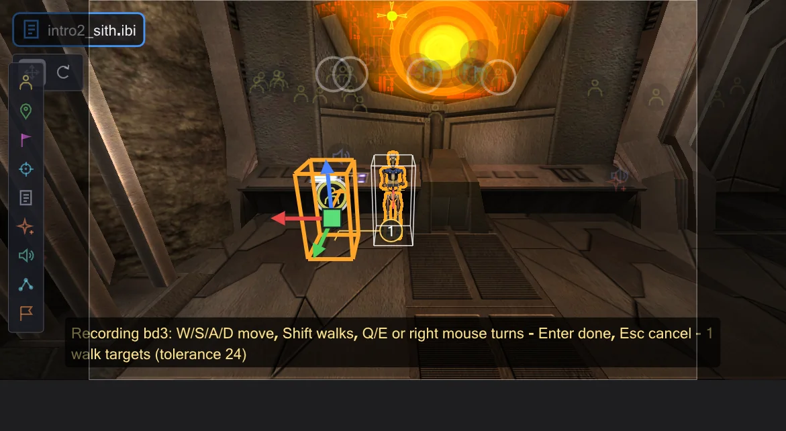

Časová osa
The timeline plays the scene and shows when everything happens - camera shots with names, speech with subtitles, music, the script's waits and every actor. Click a block and the side bar explains it; drag it and the script changes.

Playing and moving around#
The play button (▶) under the map starts and stops; with the mouse over the timeline Space does the same. Click or drag on the ruler to set the time - the 3D view shows the scene at that moment. Left / Right move by one game frame (50 ms, the grid of the game logic), with Shift by one second, with Ctrl by five seconds, Home jumps to the start. The legend under the rows lists these keys. The speed field slows the scene down (sound only plays at 1x), Smyčka repeats it. Subtitles shows the subtitles in the preview picture the way the game does (the game setting g_subtitles): with the script camera on, in the middle of the lower black bar, two lines at a time, each pair as long as its letters take of the sound; Movie Duels draws them at half size (cg_textprintscale). As in the game, Jedi Academy and Movie Duels show none by default, Jedi Outcast shows them in cinematics, and a figure with SET_USE_SUBTITLES always shows its lines; SET_CAPTIONTEXTCOLOR changes the colour.
A scene starts with a section of about 30 seconds. Vše shows the whole scene, − and + zoom out and in, Ctrl+wheel zooms around the mouse pointer, Shift+wheel scrolls. Only while zoomed in, a slim navigation bar above the ruler shows which part of the scene you see - click or drag it to move there.
Zvuk jako ve hře#
Náhled přehrává zvuky scény tak, jak to dělá hra. Slyšíte z kamery, kterou pohled ukazuje - při přehrávání z kamery animační sekvence. Každý zvuk se aktualizuje v každém snímku: odsuňte kameru a zeslábne, střihněte na jiné místo a uslyšíte, co je tam. Hlasová replika, která začala mimo dosah, běží dál potichu. Jako ve hře jen zdroje, které kamera mohla vidět (její PVS), nechají meče bzučet, reproduktory hrát ve smyčce, dveře a efekty znít; hlasy, zvuky poznámek ROFF a rozbíjené objekty jsou slyšet vždy. Neviditelné NPC nezapne svůj meč slyšitelně - zvuk zapnutí přijde, až se objeví. Hlasitosti se řídí výchozími hodnotami hry (efekty 0.5, hlasy 1.0, hudba 0.25) a lze je změnit v Úpravy → Předvolby. Zvuk hraje jen při rychlosti 1x.
sound na postavě zůstane podle pravidel Movie Duels tam, kde začala, a podle pravidel OpenJK se pohybuje s postavou (Předvolby). Podle pravidel OpenJK se spustí každá poznámka snímku ROFF (Movie Duels a Jedi Outcast spustí jen první) a loop sfx <sound> dá entitě zvuk ve smyčce až do loop sfx kill; poznámka USE <script> spustí tento skript na entitě a loop rof absolute|relative spustí dráhu znovu jako hra (úloha play nikdy neskončí, takže dowait na ni čeká navždy).Overview and Detail#
Overview shows the scene at a glance: Camera – position has one block per shot, from one camera move to the next, named after its mark (or as readable coordinates); Camera – rotation shows the pans, a pan without duration is marked as a cut. Speech shows every line as long as its sound file, with speaker, subtitle from the game's string files (Jedi Academy and Movie Duels: strings/english/<map>.str, Jedi Outcast: strip/<map>.sp, with the extra packages some maps read) and the waveform. Music shows which music plays from when. Script flow shows the waits of the script as hatched blocks with what they wait for, and its commands as labelled marks; a map change is a red mark. Each actor has one row: meaningful animations with their names on top, its walks numbered below, a dashed line where it stands still, hatched where it is not visible. The arrow at the name opens its Animation and Commands.
 Obrázek je zatím anglicky
Obrázek je zatím anglickyDetail (or Tab over the timeline) splits the camera into move, pan, zoom and fade and draws the field of view and the fade as lines. They are straight between two commands because the game interpolates them linearly - there are no ease curves. If a camera move starts before the previous one of the same kind has finished, it gets a lane of its own and the red note jumps back: the game only takes over position and angle at the end of a move (cg_camera.cpp), so the new move starts from where the previous one began - the camera jumps back.
What happens here?#
 Obrázek je zatím anglicky
Obrázek je zatím anglickyClick any block or mark: the time jumps there, its line is selected in the script, and below the script column the box What happens here? says in plain words what it does - where the camera moves and how long, who speaks which line, what a wait waits for and who sends that signal, which animation plays for how long. Open script line opens the command in the editor. A command that comes from another script (run, use, spawnscript) names that script and its line there - Open script line opens that script and selects the line; one the simulation inserted has no line.
Filters and search#
Only active hides actors that do nothing in the visible section. Problems shows only places with notes: camera moves that jump back, commands the preview does not simulate yet, the map change. The search field filters by name, mark, file, subtitle or command (for example luke, cam1b, SET_ANIM).
 Obrázek je zatím anglicky
Obrázek je zatím anglickyZměna času tažením#
Drag a camera block or a line left or right: the wait before it changes, so it happens earlier or later and everything after it moves along; with Alt the wait after it gets shorter by the same amount and the rest stays. Drag the right edge of a camera block to change its duration, the right edge of a wait to make it longer or shorter. A line keeps its length - it is the length of the sound file. A walk cannot be made longer or shorter: its duration comes from the path finding and the speed of the figure. Everything snaps to the game's 50 ms frames, and while you drag a note says what changes in the script.
 Obrázek je zatím anglicky
Obrázek je zatím anglickyEvery drag writes the value into the script (comments and formatting stay) and is exactly one step for Ctrl+Z - afterwards the script is byte for byte what it was.
Recording a walk#
Select a figure (an NPC) in the view or in its row and press Record in the transport bar: from the time of the playhead you steer it in the preview - W/S/A/D move, Shift walks instead of running, Q/E or the right mouse button turn. It moves with the game's movement code (Pmove), at the speeds from its .npc file and against the walls of the map. The camera follows; the path is drawn, and the numbered circles are the walk targets that will be written. Done (Enter) writes them, Cancel (Esc) changes nothing.

Obrázek je zatím anglickyWritten is what the game uses to let an NPC walk: one ref_tag per point and one set ( SET_NAVGOAL, ... ), which waits in the game until the figure has arrived, with SET_RUNNING/SET_WALKING before it where the gait changes. Points are kept only where they are needed: where the path leaves a straight line by more than the tolerance (in units, adjustable while recording), where a straight line would run into a wall, and where the gait changes. The commands go into the figure's own commands at the time of the playhead (a new affect block if it has none) - one step for Ctrl+Z. Afterwards the preview walks it like the game: between the points the NPC finds its own way at its own speed - the game has no timing per stretch, so the recording sets only the points and the gait.
 Obrázek je zatím anglicky
Obrázek je zatím anglickywait ends one game frame (50 ms) later than written, and a dowait waits for the task it names. A command the preview does not simulate yet (for example camera ( TRACK ) or print) is shown as a red mark instead of being guessed. The rules of OpenJK or Movie Duels apply as set in Předvolby.